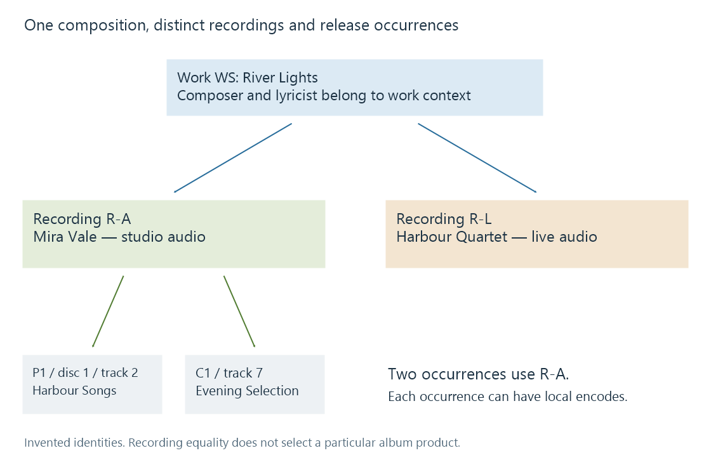

Music recordings and track occurrences
A music recording identifies distinct recorded audio that can occur on several releases and be encoded in multiple local resources.
A familiar song can have a studio recording, a live recording and a remix. They may express the same work, but they contain different recorded audio. That difference matters when a listener chooses a performance, looks up credits or matches a local file.
A recording can also appear more than once without becoming a different recording every time. The original album, a compilation and a reissue can all contain occurrences of the same studio audio.

Recording, track and file
Use the fictional River Lights studio recording R-A:
| Object | Example | What changes |
|---|---|---|
| Recording | R-A, Mira Vale's studio version | Recorded audio identity |
| Track occurrence | Disc 1 track 2 of Harbour Songs | Position and credit in that release |
| Another track occurrence | Track 7 of Evening Selection | Another release context |
| Local file | A FLAC encode of the first occurrence | Encoded bytes, tags and storage |
| Another local file | An AAC encode of the same audio | Technical representation |
Here R-A is an invented explanatory key. An actual MusicBrainz recording ID has its own identifier syntax.
The two occurrences can have different track numbers and album artwork while referring to the same recording. Copying the second occurrence's album fields onto the first would preserve the audio match and lose the release context.
What makes recorded audio different?
A new performance changes the recording. A remix changes the presented mix of recorded material. An edit can change the sequence or remove a passage. Merely compressing unchanged audio into another format changes a resource representation.
MusicBrainz's recording model places its audio identity after editing/mixing and before final mastering, so mastering alone does not create a new recording in that catalogue's terminology. This is a catalogue convention, not a universal assertion that every remaster sounds identical.
A remaster can change dynamics, level or tonal balance while preserving that recording relationship. For a listener comparing releases, those presentation differences still matter. The release identity can retain them.
ISRC supplies another identifier scope for recorded sound and music video. Assignment follows its own rules. A MusicBrainz entity and an ISRC field are related catalogue evidence; neither is a hash of the local file.
The audio match leaves another question
Suppose a fingerprint matches the studio recording R-A. That is useful evidence about which audio was represented. It cannot decide whether the local track was obtained from Harbour Songs or Evening Selection when both contain that recording.
Release-specific evidence—album identity, track list, disc/track position and product identifiers—resolves the remaining question. Duration can help distinguish an edit but is not sufficient to identify a release by itself.
Emby's tag-based music organisation makes that distinction practical. Recording and release identifiers can supply precise context, while album, album-artist and track fields describe the occurrence the library should present. A match that gets the recording right but rewrites the album incorrectly has solved only one part of the identity problem.
See Also
- Musical works and compositions
- Music releases and album editions
- Media item identity
- Acoustic fingerprinting
- MusicBrainz identifiers